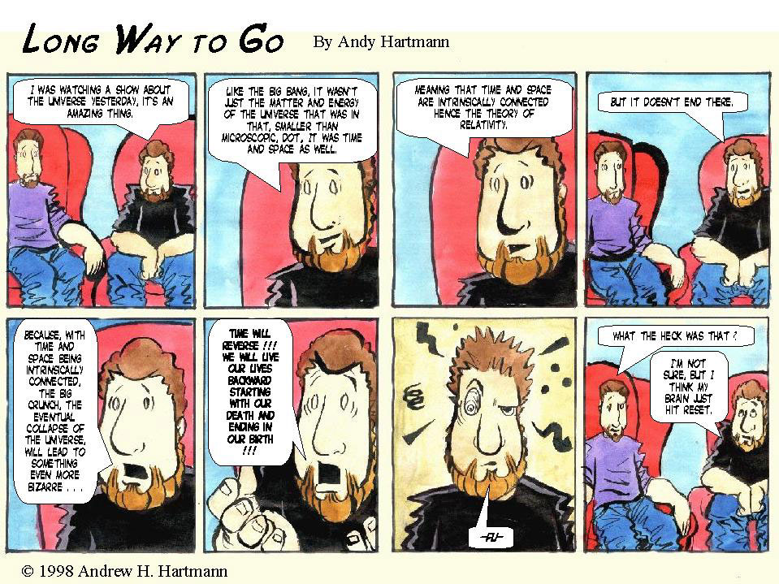

April 1998 · Week 1
Sunday
Strip 71 of 90

Tip: the ← and → keys flip through the strips. Click a strip to see it full size.
April 1998 · Week 1
Strip 71 of 90

Tip: the ← and → keys flip through the strips. Click a strip to see it full size.